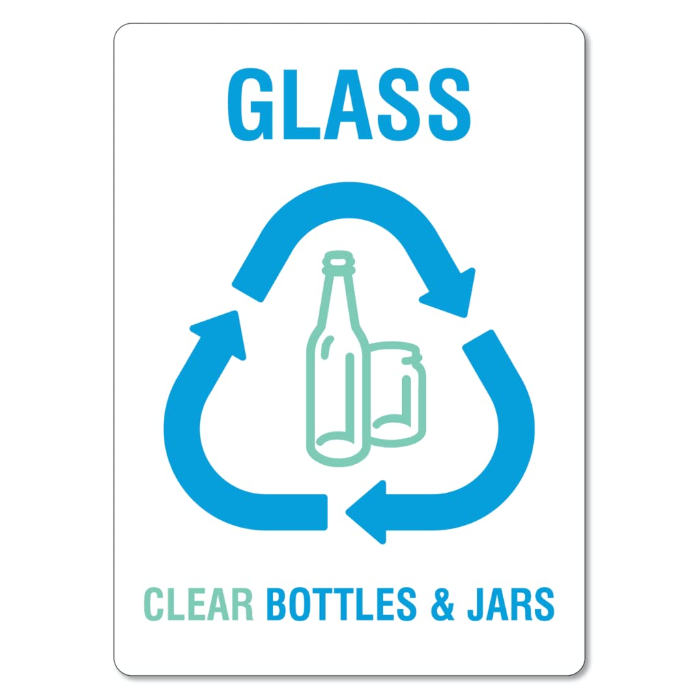

Rác không đốt được (燃えないゴミ / 不可燃ゴミ)
Đây là các loại rác không thể xử lý bằng phương pháp đốt.
Chúng thường là vật liệu kim loại, thủy tinh, gốm sứ hoặc thiết bị cứng nên cần được thu gom riêng để đảm bảo an toàn và thuận tiện cho việc xử lý.
Ví dụ các loại rác
- 🔩 Kim loại nhỏ
- 🥛 Kính, ly thủy tinh
- 🏺 Gốm sứ, chậu cây
- 🔪 Dao kéo, vật sắc nhọn
- 🧴 Bình xịt và gas mini (đã xả hết khí)
- 💡 Bóng đèn (cần bọc bằng giấy báo)
- 🔌 Thiết bị điện nhỏ
- 🍳 Nồi và chảo

Nguồn: Amazon.com - Glass Waste Sign
Cách xử lý trước khi bỏ rác
- Các vật dễ vỡ như kính hoặc gốm sứ nên được bọc lại để tránh vỡ.
- Không trộn rác không đốt được với rác tái chế hoặc rác đốt được.
- Bỏ rác đúng giờ thu gom theo quy định của địa phương.
Hướng dẫn xử lý một số loại rác đặc biệt
Bình xịt và gas mini
- Cần xả hết khí trước khi bỏ vào rác để tránh nguy cơ cháy nổ.
- Nên xả khí ở nơi thoáng gió, tránh gần lửa hoặc thiết bị điện.
- Sau khi xả hết, bỏ vào rác không đốt được theo quy định địa phương.
Dao kéo và vật sắc nhọn
- Bọc lưỡi dao bằng giấy báo, bìa cứng hoặc vải dày.
- Dán băng keo để cố định lớp bọc.
- Ghi chữ 危険 (きけん – nguy hiểm) bên ngoài túi để nhân viên thu gom chú ý.
Bóng đèn
- Bọc bóng đèn bằng giấy báo hoặc hộp giấy để tránh vỡ.
- Nếu là bóng đèn huỳnh quang, một số địa phương yêu cầu bỏ vào điểm thu gom riêng.
- Không bỏ trực tiếp vào túi rác khi chưa bọc.
Thiết bị điện nhỏ
- Tháo pin hoặc pin sạc ra trước khi bỏ vào rác.
- Bọc thiết bị bằng giấy báo hoặc bìa cứng để tránh gây thương tích.
- Nếu có thể, mang đến điểm thu gom thiết bị điện tử để tái chế.
- Các thiết bị điện tử nhỏ như máy sấy, bàn ủi,... thường được phân loại vào rác không đốt được